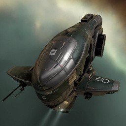

Navitas

Тип корабля: Фрегат
Государство/Организация: Gallente
Примерная стоимость: 133.000 ISK
Описание
В 114-м году по юлайскому летоисчислению крупнейшие государства галактики, увязшие в тяжёлой, затяжной войне без конца и края, были вынуждены обратить внимание на растущую потребность военных флотов в ремонтных кораблях и кораблях обеспечения — она диктовалась самим характером продолжительных боевых действий в межзвёздном масштабе, способных полностью измотать противоборствующие стороны. В Галлентской Федерации такой корабль был создан на основе фрегата типа «Навитас» после существенной переработки конструкции. «Навитас» отлично зарекомендовал себя в качестве бурового корабля, широко используемого независимыми пилотами; он также был едва ли не лучшим вариантом для начинающих торговцев и даже демонтажников. Во время перестройки конструкции «навитасов» их прочная броня и сканеры дальнего действия уступили место установкам дистанционного ремонта; «навитасы» распрощались с успокаивающим жужжанием буровых лазеров и погрузились в море битвы.
Характеристики
Корпус
Запас прочности корпуса: 335 ед.
Вместимость грузового отсека: 280 м^3
Объем отсека для дронов: 5 м^3
Пропускная способность канала телеуправления: 5 Мбит/с
Масса: 1.450.000 кг
Занимает объем: 10.000,0 м^3 (2.500,0 м^3 в разобранном виде)
Влияние инертности конструкции: 3,75x
Сопротивление корпуса ЭМ-урону: 33 %
Сопротивление корпуса термальному урону: 33 %
Сопротивление корпуса кинетическому урону: 33 %
Сопротивление корпуса фугасному урону: 33 %
Броня
Запас прочности брони: 400 ед.
Сопротивление брони ЭМ-урону: 50 %
Сопротивление брони термальному урону: 35 %
Сопротивление брони кинетическому урону: 35 %
Сопротивление брони фугасному урону: 10 %
Щит
Запас прочности щита: 250 ед.
Влияние на время регенерации щитов: 10 минут и 25 секунд
Сопротивление щита ЭМ-урону: 0 %
Сопротивление щита термальному урону: 20 %
Сопротивление щита кинетическому урону: 40 %
Сопротивление щита фугасному урону: 50 %
Сопротивление средствам РЭП
Сопротивление накопителя нейтрализирующему воздействию: 0 %
Сопротивление воздействию генератору стазис-поля: 0 %
Сопротивление воздействию помех на наводку вооружения: 0 %
Накопитель энергии
Емкость накопителя: 595,0 ГДж
Время востановления заряда: 297,5 с
Целеуказания
Максимальная дальность захвата цели: 38 км
Максимальное количество захваченных целей: 7
Радиус сигнатуры: 36 м
Разрешающая способность систем захвата цели: 875 мм
Эффективность радарной системы: -
Эффективность магнитнометрической системы: 11 ед.
Эффективность гравиметрической системы: -
Эффективность ладарной системы: -
Двигательная установка
Максимальная скорость: 410 м/с
Скорость в варп-режиме: 5,0 а.е./с.
Служба оснащения
Мощность ЦПУ: 145,0 Тф
Мощность реактора: 49 МВт
Калибровка: 400 ед.
Точки монтажа орудийных установок: 2
Точки монтажа пусковых установок: -
Разъемы большой мощности: 3
Разъемы средней мощности: 3
Разъемы малой мощности: 3
Разъемы под установку тюнинг-модулей: 3